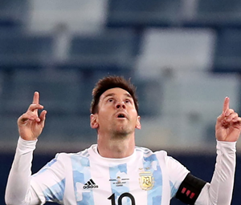

Lionel Messi
He is mooted as the best player in the world, if not one of the greatest players of all time.
He is mooted as the best player in the world, if not one of the greatest players of all time.
At an age when most players have retired Cristiano Ronaldo has continued to defy the odds with his continued success..
Kylian Mbappé is the first teenager to register a goal in the final since Pele in 1958.
The most popular Arab footballer of all time, nicknamed the Egyptian King, is probably the player most Arab fans would love to watch.
Virgil Van Dijk is thought to be one of the best defenders in the world. His skills are considered unique.
Italy did not make it to the Russia World Cup, but you can be sure they are going Qatar 2022 with Euro 2020s best player Gianluigi Donnarumma.
The Brazilian superstar knows very well that this was supposed to be his tournament to win.
Another Italian youngster to make our list, Federico Chiesa might not be a name many people are familiar with..
Despite being just 18, Barça's Canary Islander is the most important player in Spanish midfield.
Watch FIFA World cup 2022 highlights. Catch the latest World Cup match Highlights, live scores, and video clips.